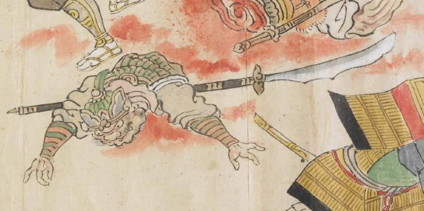

体をふたつに切られた鬼。兜をかぶり、体には鎧を身につけている。切られた部分から大量の血液が流れ出している。目を見開き大きく両腕を広げて倒れている。
出典：親書誌：U426_nichibunken_0079：酒天童子絵巻；シュテンドウジエマキ／日付：2006／資源識別子：U426_nichibunken_0079_0014_0007
Copyright (c)2010- International Research Center for Japanese Studies, Kyoto, Japan. All rights reserved.